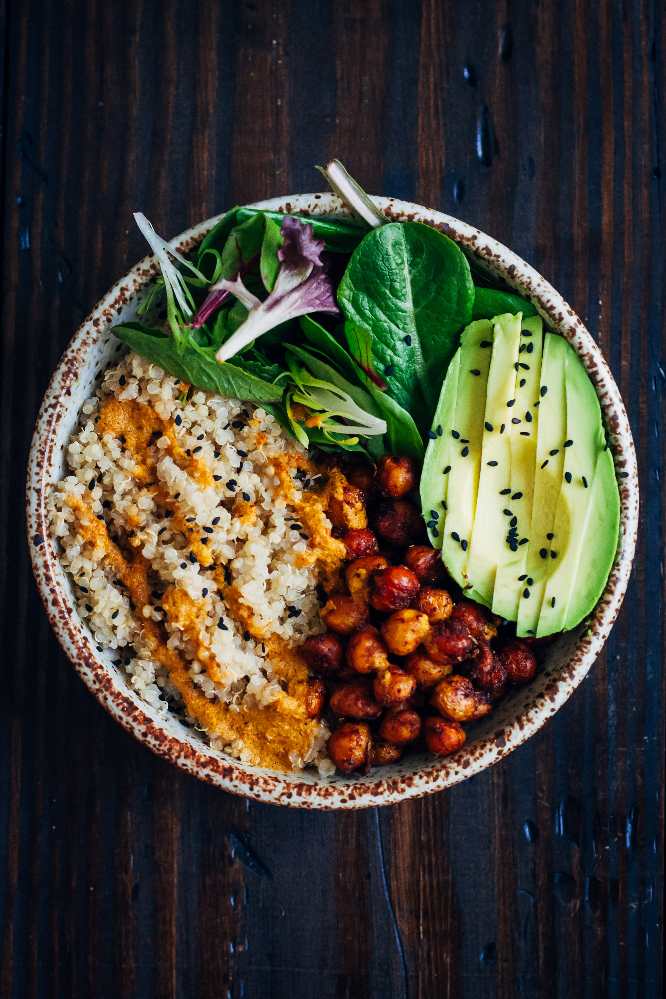

Buddha Bowls
Buddha Bowls Recipe

Description
One of the highlights for me of becoming vegetarian was going to my local
farmer's market a lot more and realizing how many and diverse vegetables
there are. These made me want to try out a lot more veggie based recipes
rather than relying on meat-substitutes. During my interent scrolling I came
across a common recipe: buddha bowls. Bowls packed with an assortment of veggies,
grains, leaves, seeds, dressings--you name it. Hence, I sought to create my own
version of a buddha bowl which I present to you today. This one has the perfect
level of crunch, flavor, and contrast.
Ingredients
- 1 can 15oz. chickpeas
- 1/4 cup dried quinoa
- 1 small sweet potato, diced
- 1/2 avocado, sliced
- 1/2 head of cauliflower, cut into florets
- 1/2 bunch of curly kale, chopped
- Green goddess salad dressing from Trader Joe's
- 2 cloves garlic, minced
- 1 lemon
Steps
- Preheat an oven to 400 degrees fairenheit.
- Rinse and strain the can of chickpeas. In a bowl, season with olive oil, salt, pepper, garlic
powder, cumin, and oregano. Mix and coat thoroughly. Spread out on a parchment-lined baking sheet.
Let roast for 20 minutes, shaking the sheet halfway through.
- Toss the sweet potatos in a bowl with olive oil, salt, pepper, garlic powder, oregano, and cumin.
Mix and coat thoroughly. Spread out on a parchment-lined baking sheet and let cook for 30 minutes,
fliipping the cubes halfway through.
- Toss the cauliflower florets in a bowl and season with olive oil, salt, pepper, garli powder, and
oregano. Mix in the minced garlic. Spread florets out onto a parchment-lined baking sheet and let
roast for 30 minutes, flipping florets halfway through.
- Rinse and strain the quinoa. Follow the package's directions accordingly. For more flavor, I
suggest cooking the quinoa in vegetable broth with a bay leaf and garlic clove.
- In a deep bowl, massage the curly kale with olive oil, salt, pepper, and lemon juice until soft.
Should take around 3-5 minutes. Set aside when done.
- My favorite part: the assembly
. In a wide-brimmed bowl, add in sections the cooked
quiona, kale, sweet potatoes, and cauliflower. On top, add the sliced avocado. Feel free to sprinkle on
some sunflower or seasame seeds. Drizzle on however much green goddess dressing you want. Enjoy!
Makes 1 bowl